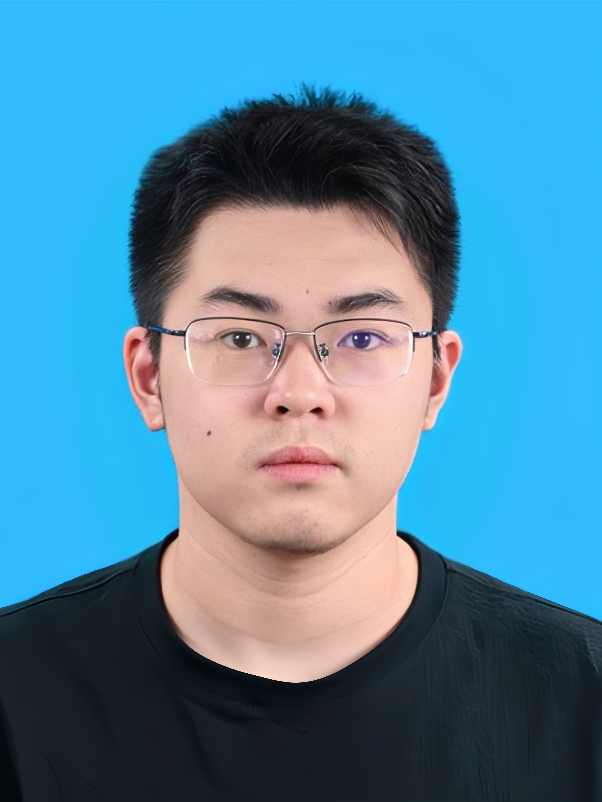

Haonan Wang 王浩楠Ph.D. Student
School of Artificial and Automation (AIA),
|
 |


Biography
I got the B.Eng. degree at Huazhong University of Science and Technology (HUST) in 2025.
I am now working on motion estimation and dynamic scenes reconstruction, if you have an excellent project for collaboration, please email me!
Interests
News
- 2025.09, Our diffusion-based optical flow with frame-event fusion is accepted to NeurIPS'25 (Spotlight).
- 2025.06, Our event-based 4D Gaussian splatting paper is accepted to ICCV'25.
- 2025.02, Our event-based dense and continuous optical flow paper is accepted to CVPR'25.
Publications (Google Scholar)

|
Injecting Frame-Event Complementary Fusion into Diffusion for Optical Flow in Challenging Scenes
Haonan Wang, Hanyu Zhou*, Haoyue Liu, Luxin Yan Annual Conference on Neural Information Processing Systems (NeurIPS), Spotlight, 2025 |
| STD-GS: Exploring Frame-Event Interaction for SpatioTemporal-Disentangled Gaussian Splatting to Reconstruct High-Dynamic Scene
Hanyu Zhou#, Haonan Wang#, Haoyue Liu, Yuxing Duan, Luxin Yan, Gim Hee Lee IEEE/CVF International Conference on Computer Vision (ICCV), 2025 |
|
| Bridge Frame and Event: Common Spatiotemporal Fusion for High-Dynamic Scene Optical Flow
Hanyu Zhou, Haonan Wang, Haoyue Liu, Yuxing Duan, Yi Chang, Luxin Yan IEEE/CVF Conference on Computer Vision and Pattern Recognition ( CVPR ), 2025 |
|

|
Nighttime Scene Optical Flow: Common Spatio-Temporal Motion Adaptation
Hanyu Zhou, Haonan Wang, Haoyue Liu, Luxin Yan, Gim Hee Lee IEEE Transactions on Pattern Analysis and Machine Intelligence ( TPAMI ), 2025 (Under review) |